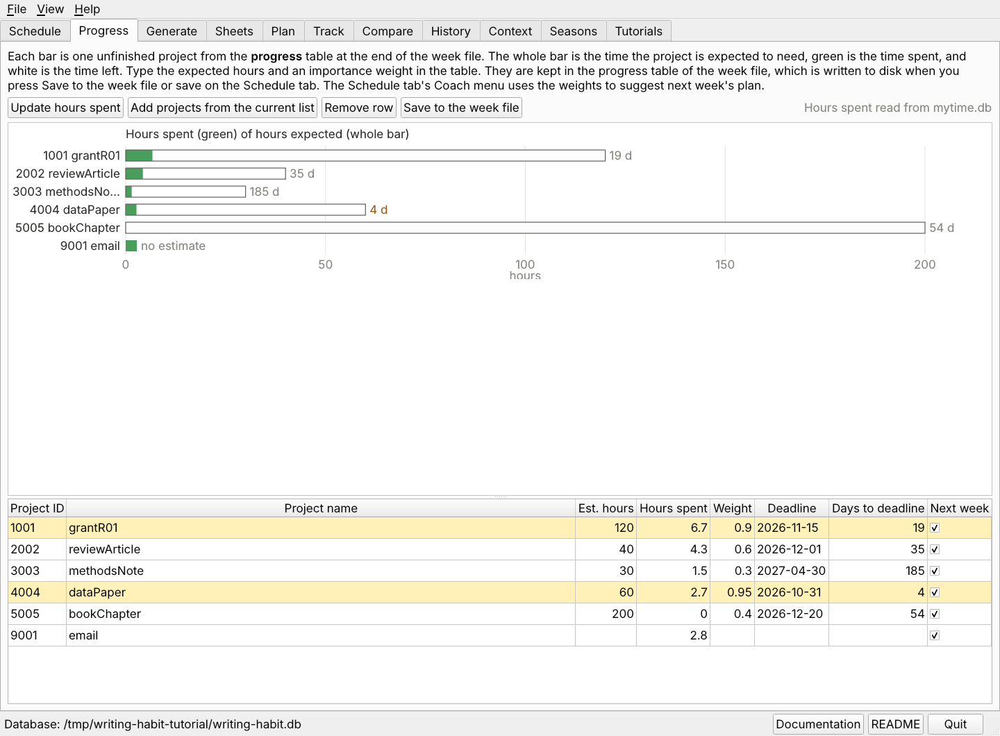
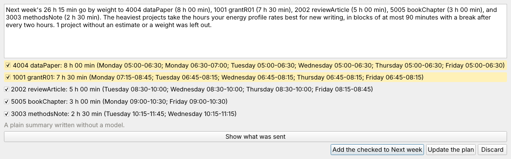

The weekly comparison says how one week went. The Progress tab takes the long view. It draws one bar for each unfinished project, so you can see which projects are nearly done, which have barely started, and which deadlines are close. It also lets you say how much each project matters, and the coach uses those weights to suggest next week's plan.

The Progress tab with the practice week. The whole bar is the estimate, green is the time spent, and white is the time left. The days to each deadline follow the bar.
progress is added at the end of the
file, with a row for each numbered project of this semester's list. A project
brings its deadline with it.YYYY-MM-DD.zTimeSpent
table of mytime.db, matched by the project's four-digit number. The
tracker is only read, never written.| Column | Filled by |
|---|---|
| Project ID, Project name | the current list |
| Est. hours, Weight | you |
| Hours spent | Update hours spent, from mytime.db |
| Deadline | the list or the legend, or you |
| Days to deadline | counted from today each time the table is written |
| Next week | the checkbox, or the plan dialog |
The projects are listed by number and name. A dark green piece past a tick mark is time spent beyond the estimate, which is a sign to raise the estimate or to ask why. The days to the deadline are amber within two weeks and red once the deadline has passed. A checked project whose weight is above 0.85 is highlighted in pale yellow. Hover over a bar for its numbers.

The plan for next week, one line per project with its hours and blocks.
writing-habit-el reads and writes the same table. From the week's buffer:
M-x writing-habit-progress the progress dashboard M-x writing-habit-progress-update fill Hours spent from mytime.db M-x writing-habit-hours the week as hours by day
In the dashboard, u updates the hours, a adds the current list's projects, e jumps to the table, and g redraws.
Next, compare plan and effort.